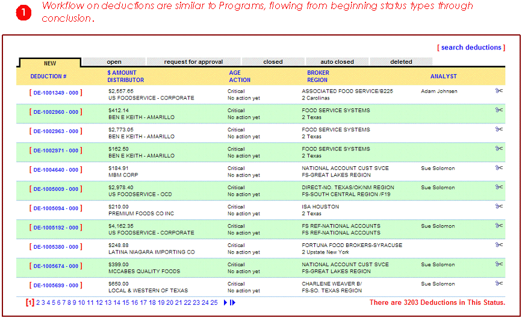

Blacksmith Applications, www.blacksmithapps.com
Here again, FORGESM gives you the ability to fully monitor, analyze and control deductions information so that you can ultimately manage your business better. From this page, you can drill down to see details of the deduction and related billback.
